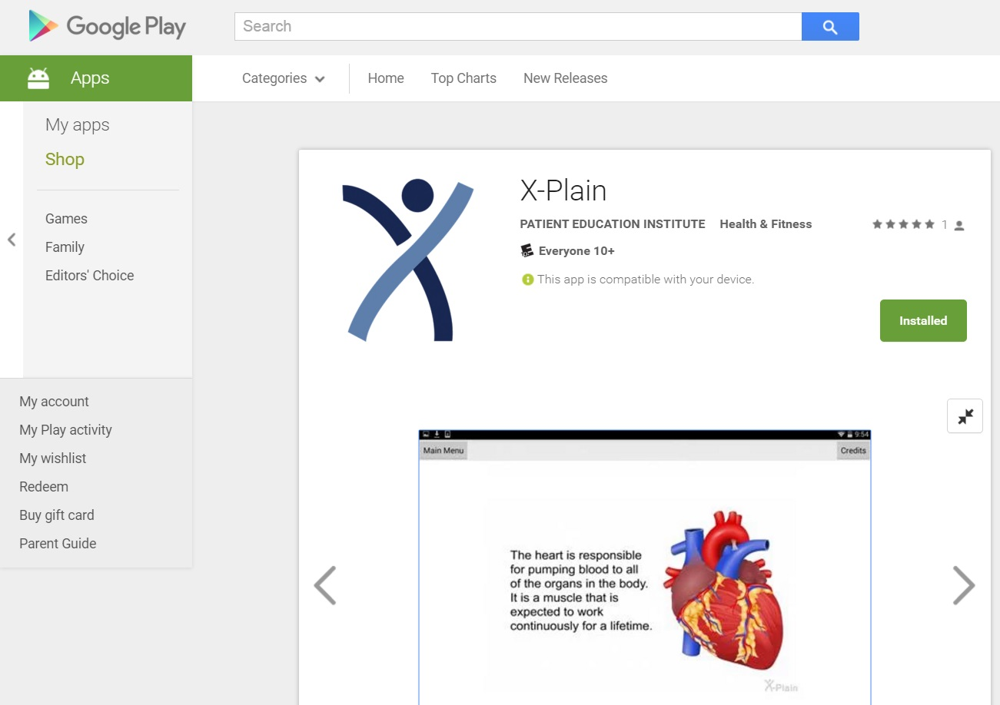
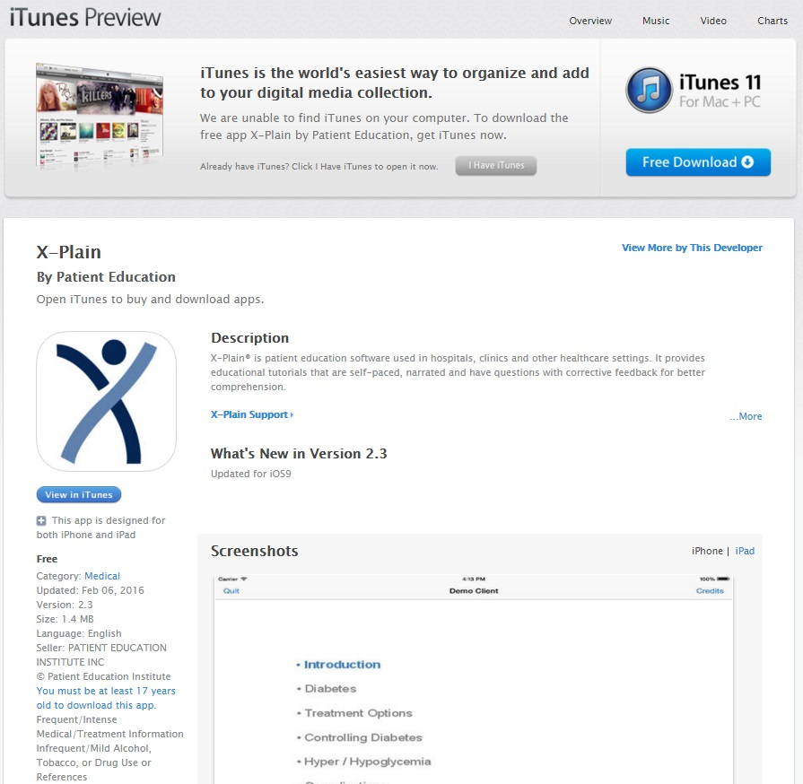
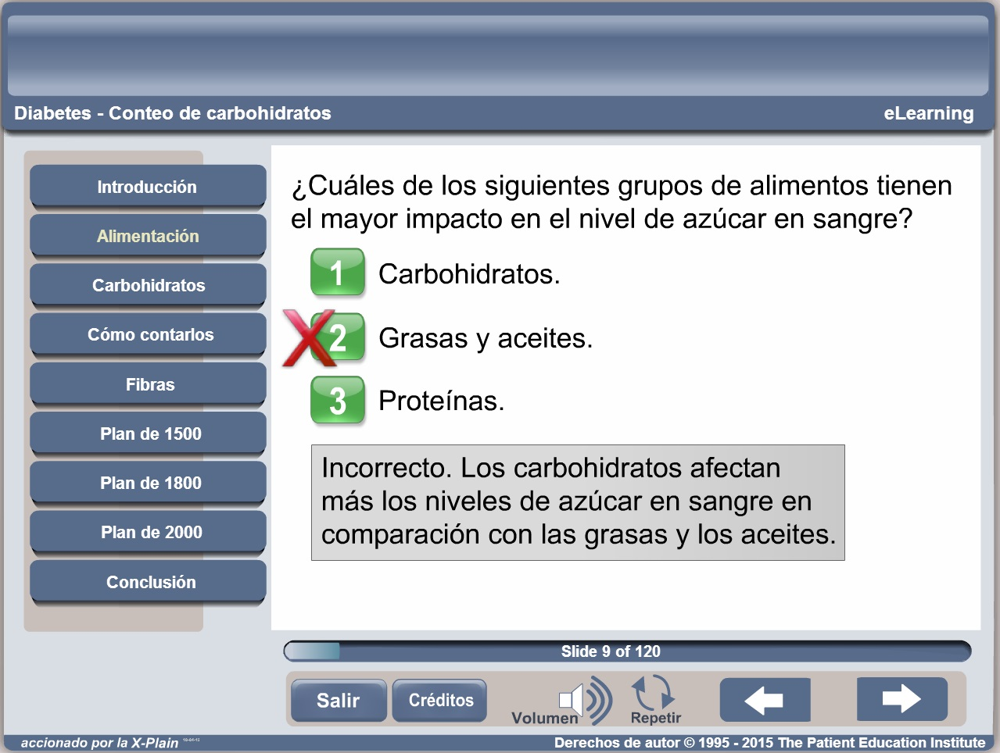
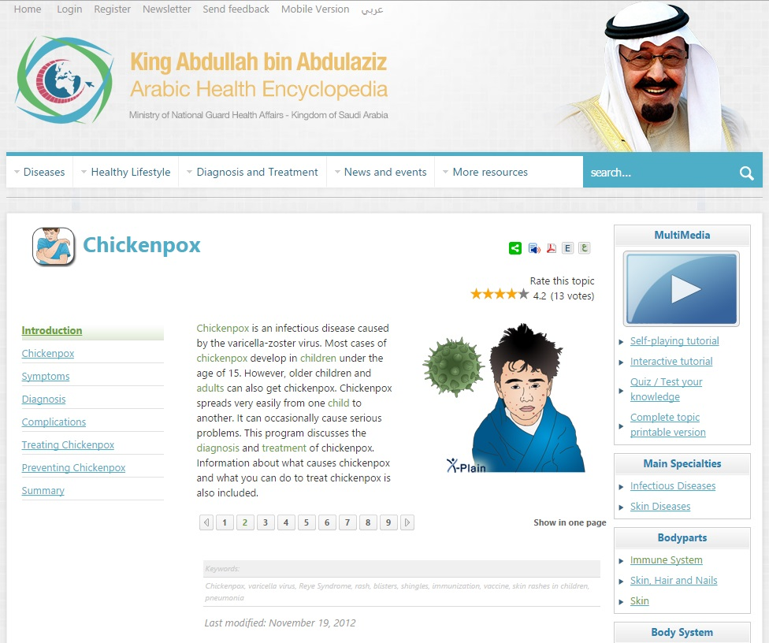
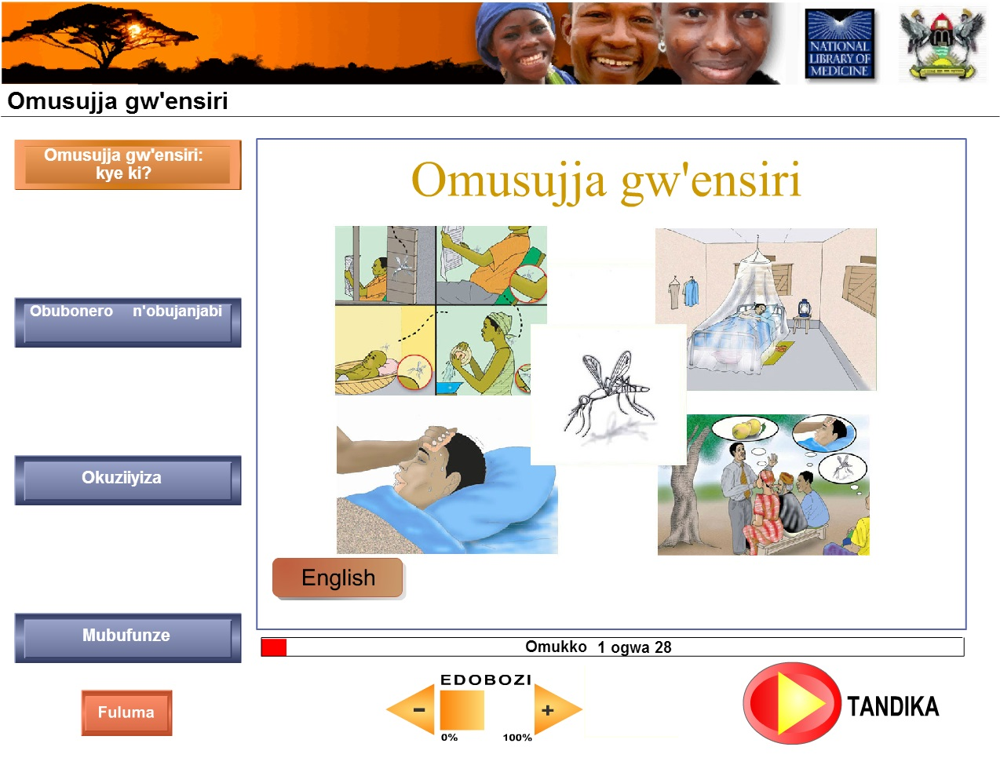
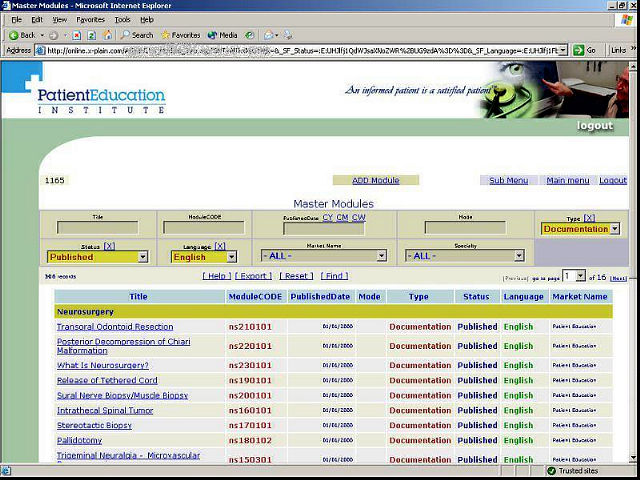

Home
The X-Plain Health Encyclopedia for Websites is designed for hospital websites and health systems. It includes the entire library (+10,000 tutorials, illustrated handouts, and videos), covering all medical specialties.
Nurses can print branded handouts, display the X-Plain videos on bedside TVs, run the tutorials on tablets, or send assignments electronically for patients to complete at home. Patients, caregivers, and health consumers visiting the website can search for specific health topics and learn in the format they choose: video, tutorial, text, or illustrated PDF.
The system tracks progress, scores and completions to generate usage reports to clients. All content is modular, database driven and customizable with the clients' banners, logo and PDF summaries.
I developed the system on Microsoft IIS (ASP), then ported it into Apache (PHP) in order to integrate with a wide spectrum of system, including MedlinePlus, Cerner, Android and iPad.
Youtube Python scriptsI developed the Python scripts that automatically generate Youtube videos from the tutorial XML manifests and post them to Youtube account. A Python system uses FPMG to generate videos based on XML manifests and content with customizations and upload them to Youtube accounts. Code: Python Video Generator |
A sample video of the 10,000+ topics |